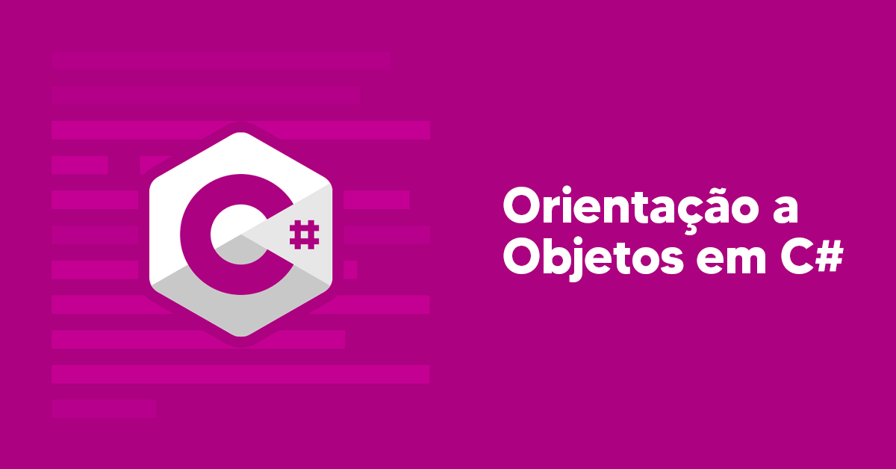

Nome do Curso
Nome do Professor
Descrição do Curso
O curso de Programação Orientada a Objetos com C# é projetado para desenvolvedores que desejam dominar os conceitos de OOP (Object-Oriented Programming) e aplicá-los na linguagem C#. Durante o curso, você aprenderá a criar aplicações robustas, reutilizáveis e de fácil manutenção.
Vamos explorar os quatro pilares da orientação a objetos: encapsulamento, herança, polimorfismo e abstração. Você aprenderá a criar classes, interfaces e objetos, além de como utilizar coleções e manipulá-las de forma eficiente. Também abordaremos boas práticas de design, como o SOLID, para garantir a qualidade do seu código.
Ao final do curso, você será capaz de projetar e implementar sistemas completos em C#, aplicando os conceitos de OOP para resolver problemas do mundo real e construir soluções escaláveis e eficientes.
Valor
R$ 349,00